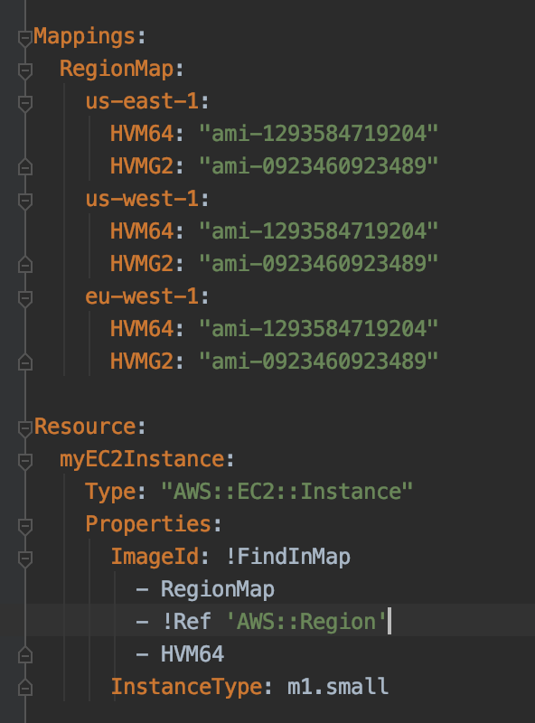

Home
Cloud Formation
Links
AWS Cloud Formation Documentation
Template Structure
AWSTemplateFormatVersion
The version of the template.
Description
Description of the template. This must follow the AWSTemplateFormatVersion
Metadata
Metadata about the template
Parameters
Values to pass to the template at runtime
Mappings
A mapping of keys and associated values that can be used to specify conditional parameter values, similar to a lookup table.
Conditions
Conditions that control if certain resources are created or whether certain properties are assigned. For example dev or prod
Transform
Include template snippets
Resources
The resources the template will create. This is the only mandatory section.
Outputs
Describes the values that are returned from the resources, for example the name of an S3 bucket
Intrinsic Functions
Intrinsic Function Documentation
Intrinsic Functions in yaml files can be called in 2 ways
- Fn:: FunctionName
- !FunctionName
Json must use Fn::FunctionName
Ref
Returns the value of the specified paramater or resource. The only intrinsic function that isn't prepended with Fn.
FindInMap
Return a value from a map. This is useful for a region map
Base64
Base64 encodes a string
Cidr
Returns an array of CIDR address blocks
GetAtt
(get attribute) Returns the value of an attribute from a resource in the template
GetAZs
Returns an array that lists Availability Zones for a specified region
ImportValue
Returns the value of an output exported by another stack. Typically used for cross stack references
Join
Appends a set of values into a single value, separated by the specified delimiter
Select
Returns a single object from a list of objects by index
Split
Splits a string into a list of string values so that you can select an element from the resulting string list
Sub
Substitutes variables in an inout string with values that you specify
Transform
Specifies a macro to perform custom processing on part of a stack template
Mappings
Matches a key to a corresponding set of named values

Wait Conditions
...
Nested Stacks
...
Deletion Policies
...
Stack Updates
...
Custom Resources
...